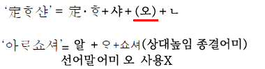
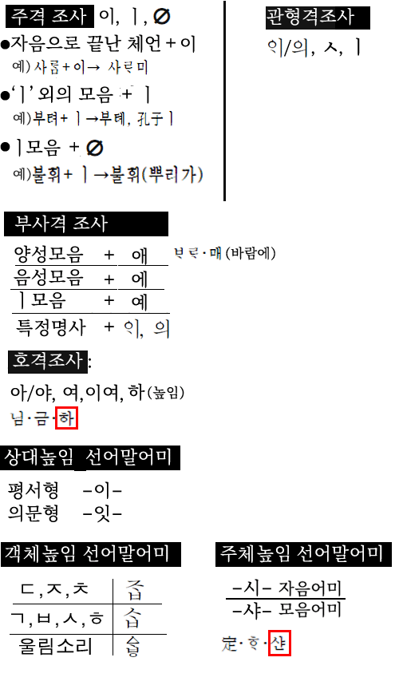

[공지.오류.정오]
경1.17년.7번문제 선지1번 해설수정

중세국어 참고그림이 표시되지 않는 버그가 있어요.

[android_korean_ver:2.10(112)]
: 정오표에 있는 사항을 반영함
(국7.2020년2번 한국사해설이 출력되는 오류)
: 사복직 문제가 표시안되는 버그 수정
: UI에 버그가 있어 일부 수정
----
[android_korean_ver:2.09(111)]
: 정오표에 있는 사항을 반영함
(일부 이미지로 된 문제가 잘리는 버그 수정)
(예) 지9.21년10번 봉황수 등
: 국회8.16년 체크노트,검색에 표시안되는 버그 수정
----
소방.21년 추가(중세국어, 시조포함)